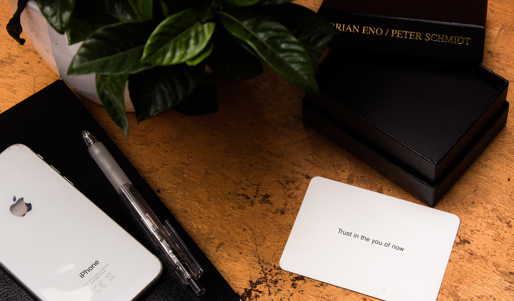

Креативный подход к решению проблем
Творческие кризисы, кажется, рано или поздно
испытывает любой человек. Часто
бывает так, что вы сталкиваетесь с проблемой, не можете решить её с первого раза и начинаете думать, что
вообще ни на что не способны. Мозг запоминает эту модель поведения, и на следующий день вам не хочется
делать вообще ничего — ведь всё равно ничего не получится
Как выйти из такого застоя? Есть разные варианты, мы поговорим об одном из
самых креативных — колоде карт.
Что это за колода
Тут могло бы быть что-то про пользу игры в
«Дурака» или о высших арканах Таро,
но у нас на примете другая колода. Она называется Oblique Strategies, или «Обходные стратегии». Первую
колоду ещё в 1975 году создали композитор, музыкальный продюсер и один из основателей жанра эмбиент
Брайан Ино и мультимедиа-художник Питер Шмидт.

Колода Oblique Strategies
Oblique Strategies в основном используют музыканты, но колода подходит для
преодоления творческого кризиса в любой сфере. Её рекомендуют писателям, продакт-менеджерам, художникам
и разработчикам.
Колода состоит из ста с лишним карточек, на которых написано всего по одной фразе. Часто — довольно
абстрактной. Например, «Какую ошибку вы совершили в прошлый раз?» или «Замените двусмысленность на
конкретику», или даже «Добавьте что-то ещё». Эти фразы и надо применять к проблеме или творческому
блоку. Каким именно способом? Решаете только вы.
Как работают «обходные стратегии»
Вот что сам Брайан Ино рассказывает о
создании Oblique Strategies:
«Эти карты появились, потому что я оказывался в рабочих ситуациях
(особенно в звукозаписывающих студиях), когда из-за паники быстро забывал, что кроме самых очевидных
решений были и другие — косвенные. И часто именно такие неочевидные способы выдавали гораздо более
интересные результаты, чем решения „в лоб“».
Таким образом, колода Ино поощряет нас видеть препятствия не
как тупики, а как
отправные точки для поиска более интересных решений.
И кстати, сейчас необязательно охотиться за редкими физическими колодами
Oblique Strategies — тем более,
что их моментально разбирают фанаты Ино. Есть довольно симпатичные
веб-сайты с
диджитал-эквивалентами
карточек и приложения для iOS и
Android.